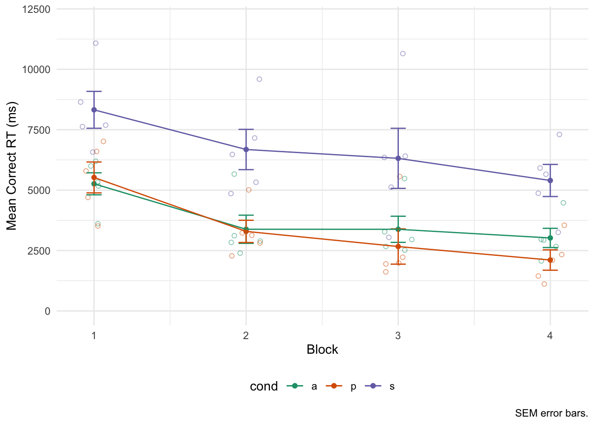
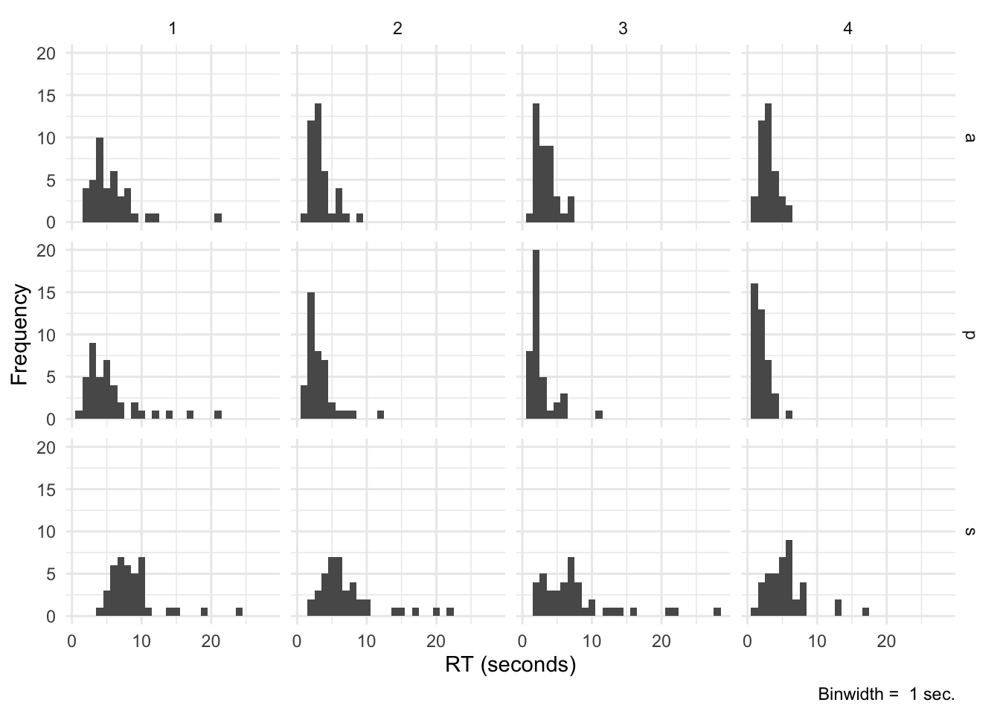
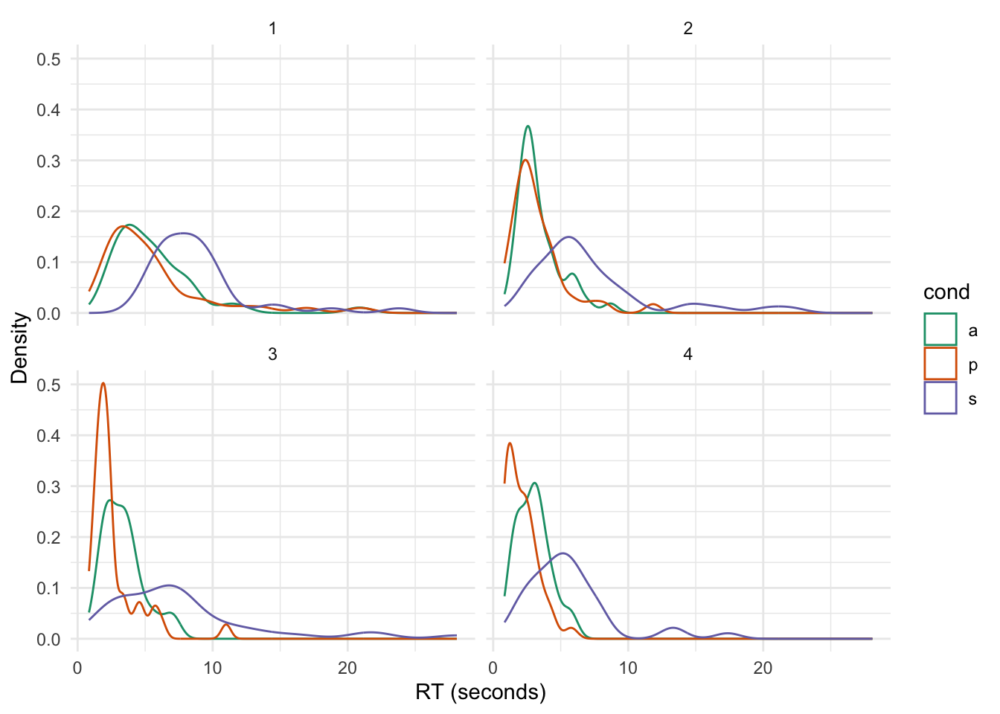

library(tidyverse)Stop Using Excel to Preprocess E-Prime Data
Academic
R
E-Prime
A walk-through of how to process E-Prime output with R.
Excel is a great tool for processing data. Whether it’s calculating a quick average, standard deviation, or t-test, Excel is fast and simple to learn and use. In fact, most of my colleagues use Excel to preprocess their data from experiments programmed in E-Prime, a software tool for running psychological experiments. However, preprocessing your E-Prime data in Excel will:
- limit the statistical methods used to analyze your data
- become burdensome with large samples ( > 20 participants)
- create large workbooks that are slow and susceptible to crashes
- create roadbumps down the line when reviewer #2 asks for a new analysis (I swear, it’s always reviewer #2)
I’ll demonstrate a different method on how to preprocess your E-Prime data with R and the R package dplyr (Wickham & Francois, 2016) using a small data set from a real experiment of mine. This method is much faster, efficient, and saves soooooo much time when it comes to reviewer #2’s requests.
Just a few notes about the experiment: participants completed a task that required them to reason about items on the screen and press #1 or #2 on the keyboard. There were 3 conditions randomly distributed over 4 blocks with 24 trials per block (8 trials per condition). I was interested in the participants’ accuracy and reaction time for correct solutions across the conditions and blocks. Therefore, each participant has only 1 E-Prime file.
Step 1 - Merging E-DataAid Files
E-Prime spat out an E-DataAid file (*.edat2) for every participant upon completion of the experiment. Let’s first concatenate these files row-wise (on top of each other) so that we end up with one big file that has each participant’s data. This is done using E-Prime’s E-Merge software.
Concatenating with E-Merge
- Open E-Merge and navigate to the directory where all the E-DataAid files are stored using the Folder Tree
- Select all the E-DataAid files and click Merge…
- Choose the appropriate option and click Next >:
- Standard Merge if all your files are in one directory (option chosen in this tutorial)
- Recursive Merge if all your files are stored in folders within folders
- Name your file and save it as a *.emrg2 file (the default)
As long as your E-DataAids are consistent with each other, they should seamlessly merge. Next, we have to convert this to a format R and other programs can read using E-DataAid:
Converting Merged E-DataAid
- Double click on the *.emrg2 file that you just created
- Go to File > Export
- Ensure the “Export to:” option is: StatView and SPSS
- Ensure that the Unicode box at the bottom is unchecked
- Click OK and name/save the file as a *.txt (the default)
Now these data are in one central file and prepared for R. Next, let’s import into R:
Step 2 - Importing into R
- Open R or RStudio and ensure your working directory is set to where you saved your text file (.txt) from above.
- Load the
tidyverse. For more information about the tidyverse click here.
- Import the file into R and save it as a variable:
eData <- read_delim(
'data.txt', # The name of your *.txt file from above
delim = '\t', # These data are tab separated
)
Tip
read_delim() has several arguments, so be sure to check them out using ?read_delim(). One really useful one is guess_max= which will search the first n rows of the data to gather the column type. For really long experiments, this option should be set to the number of rows generated for a single participant, that way it can scan at least an entire participant’s data file before “guessing” the column type.
For the purposes of this tutorial, these data are available on this website’s GitHub repository and can be downloaded into R like this:
library(httr) # To retrive data from github repo
link <- "https://raw.githubusercontent.com/mkmiecik14/mkmiecik14.github.io/master/data/data.txt"
# from https://stackoverflow.com/questions/60714074/download-csv-file-from-github-using-httr-get-request
data <- GET(link)
eData <- read_delim(content(data, "raw"), delim = "\t")
dim(eData)> [1] 480 47As we can see, this dataframe has 480 rows and 47 columns. Each row is a trial from a participant and each column is a measure/information from your E-prime experiment. E-prime gives us way too much information, so I like to clean this up and only include the essentials (Note: These variable names will vary based on your experiment):
eData_simple <-
eData %>% # original data
select(
ss = Subject, # subject
cond = probType, # condition
acc = stimulus.ACC, # accuracy
rt = stimulus.RT # reaction time
)
# Let's take a look
head(eData_simple); tail(eData_simple)> # A tibble: 6 × 4
> ss cond acc rt
> <dbl> <chr> <dbl> <dbl>
> 1 413 a 1 5578
> 2 413 s 0 9889
> 3 413 a 0 4218
> 4 413 p 1 1376
> 5 413 s 0 6169
> 6 413 p 1 2663> # A tibble: 6 × 4
> ss cond acc rt
> <dbl> <chr> <dbl> <dbl>
> 1 416 s 1 4671
> 2 416 a 1 2765
> 3 416 s 1 13400
> 4 416 p 1 957
> 5 416 a 1 2112
> 6 416 s 1 8193
Tip
The select() function allows you to rename the column names on the fly. Pretty sweet if you ask me!
I’ve printed the top and bottom 6 rows of this dataframe. As you can see, the first participant’s ID is 413, while the last participant’s ID is 416. Each trial is a row and has a problem type (either p, a, or s), an accuracy (1 for correct, 0 for incorrect), as well as an associated reaction time (RT) measure in milliseconds. Now, I forgot to program the block each trial appeared in my E-Prime experiment, but I can add it like this:
# Adding block
eData_simple <-
eData_simple %>%
group_by(ss) %>%
mutate(block = rep(c(1:4), each = 24)) %>% # 24 trials/block
ungroup()
# Let's take a look
head(eData_simple); tail(eData_simple)> # A tibble: 6 × 5
> ss cond acc rt block
> <dbl> <chr> <dbl> <dbl> <int>
> 1 413 a 1 5578 1
> 2 413 s 0 9889 1
> 3 413 a 0 4218 1
> 4 413 p 1 1376 1
> 5 413 s 0 6169 1
> 6 413 p 1 2663 1> # A tibble: 6 × 5
> ss cond acc rt block
> <dbl> <chr> <dbl> <dbl> <int>
> 1 416 s 1 4671 4
> 2 416 a 1 2765 4
> 3 416 s 1 13400 4
> 4 416 p 1 957 4
> 5 416 a 1 2112 4
> 6 416 s 1 8193 4Now these data are in a great format to summarize using the dplyr package included in the tidyverse.
Step 3 - Summarize with dplyr
Let’s calculate the mean accuracy for condition x block (3 x 4 repeated-measures factorial design). But first, let’s group based on our factors, which are 1) the subjects, 2) the conditions, and 3) the blocks.
acc <-
eData_simple %>%
group_by(ss, cond, block) %>%
summarise(
m = mean(acc), # mean
n = n() # number of trials
) %>%
ungroup() # generally a good idea to ungroup when finished
print(acc) # prints to screen> # A tibble: 60 × 5
> ss cond block m n
> <dbl> <chr> <int> <dbl> <int>
> 1 413 a 1 0.875 8
> 2 413 a 2 1 8
> 3 413 a 3 1 8
> 4 413 a 4 0.75 8
> 5 413 p 1 0.75 8
> 6 413 p 2 1 8
> 7 413 p 3 1 8
> 8 413 p 4 1 8
> 9 413 s 1 0.375 8
> 10 413 s 2 0.5 8
> # … with 50 more rowsNow to look at task-wide performance, we group by condition and block and repeat:
acc_sum <-
acc %>%
group_by(cond, block) %>%
summarise(
M = mean(m), # mean
SD = sd(m), # standard deviation
N = n(), # number of observations
sem = SD/sqrt(N) # standard error of the mean
) %>%
ungroup() # generally a good idea to regroup
Tip
summarise() can compute variables defined within summarise(). See above for how this works for the standard error of the mean (sem).
These are the summary results:
print(acc_sum) # prints to screen> # A tibble: 12 × 6
> cond block M SD N sem
> <chr> <int> <dbl> <dbl> <int> <dbl>
> 1 a 1 0.875 0.0884 5 0.0395
> 2 a 2 1 0 5 0
> 3 a 3 1 0 5 0
> 4 a 4 0.95 0.112 5 0.05
> 5 p 1 0.95 0.112 5 0.05
> 6 p 2 1 0 5 0
> 7 p 3 1 0 5 0
> 8 p 4 1 0 5 0
> 9 s 1 0.775 0.240 5 0.108
> 10 s 2 0.625 0.125 5 0.0559
> 11 s 3 0.625 0.0884 5 0.0395
> 12 s 4 0.85 0.0559 5 0.025Now what about that pesky reviewer #2? Let’s say reviewer #2 asks for a new analysis that, instead of looking at reaction time, asks for the results with reaction time for only correct solutions? If you preprocessed your data in Excel, you would probably have to re-compute all these values in each sheet and then re-do the analyses. But this is simple in R and is only one additional line of code:
corRT <-
eData_simple %>%
filter(acc == 1) %>% # filters out inaccurate trials
group_by(ss, cond, block) %>%
summarise(
m = mean(rt), # mean
n = n() # number of trials
) %>%
ungroup() # generally a good idea to ungroup when finished
print(corRT) # prints to screen> # A tibble: 60 × 5
> ss cond block m n
> <dbl> <chr> <int> <dbl> <int>
> 1 413 a 1 5999 7
> 2 413 a 2 2393. 8
> 3 413 a 3 2517. 8
> 4 413 a 4 2069 6
> 5 413 p 1 5792. 6
> 6 413 p 2 3228. 8
> 7 413 p 3 1616. 8
> 8 413 p 4 1113 8
> 9 413 s 1 7689. 3
> 10 413 s 2 4858. 4
> # … with 50 more rowsFor completeness, here’s how to compute the task-wide correct RT performance:
corRT_sum <-
corRT %>%
group_by(cond, block) %>%
summarise(
M = mean(m), # mean
SD = sd(m), # standard devation
N = n(), # number of observations
sem = SD/sqrt(N) # standard error of the mean
) %>%
ungroup()
print(corRT_sum) # prints to screen> # A tibble: 12 × 6
> cond block M SD N sem
> <chr> <int> <dbl> <dbl> <int> <dbl>
> 1 a 1 5261. 1019. 5 456.
> 2 a 2 3380. 1303. 5 583.
> 3 a 3 3379. 1209. 5 541.
> 4 a 4 3022. 889. 5 397.
> 5 p 1 5525. 1429. 5 639.
> 6 p 2 3292. 1028. 5 460.
> 7 p 3 2667. 1632. 5 730.
> 8 p 4 2108. 942. 5 421.
> 9 s 1 8324. 1707. 5 763.
> 10 s 2 6682. 1865. 5 834.
> 11 s 3 6315. 2780. 5 1243.
> 12 s 4 5400. 1486. 5 664.To summarize, the entire R script to process these data is quite concise and can accommodate many more participants with ease.
After programming your experiment with the E-Prime beast, dragging undergraduate participants through your study, and wrangling the data into one place, why not make your life easier? Ditch the Excel templates. You’ll thank me when reviewer #2 comes around!
Plotting
Processing E-Prime data this way puts it in a great format for plotting with ggplot2 — another package in the tidyverse.
I like to plot the raw data underneath the summary data, so here is an example plot for correct reaction times:
# Correct RT plot
pj <- position_jitter(width = .1)
ggplot(corRT_sum, aes(block, M, group = cond, color = cond)) +
geom_point(data = corRT, aes(y = m), position = pj, shape = 1, alpha = 1/2) +
geom_point() +
geom_errorbar(aes(ymin = M-sem, ymax = M+sem), width = .1) +
geom_line() +
scale_y_continuous(limits = c(0, 12000)) +
scale_color_brewer(palette = "Dark2") +
labs(x = "Block", y = "Mean Correct RT (ms)", caption = "SEM error bars.") +
theme_minimal() +
theme(legend.position = "bottom")
And here’s an example of how I could inspect RT curves per condition and block for all participants (trial-wise). A great way to detect outliers:
bnwidth <- 1 # in seconds
ggplot(eData_simple, aes(rt/1000)) +
geom_histogram(binwidth = bnwidth) +
labs(
x = "RT (seconds)",
y = "Frequency",
caption = paste("Binwidth = ", bnwidth, "sec.")
) +
theme_minimal() +
facet_grid(cond~block)
Comparisons across conditions are faciltiated using a density plot:
ggplot(eData_simple, aes(rt/1000, group = cond, color = cond)) +
geom_density() +
labs(x = "RT (seconds)", y = "Density") +
scale_color_brewer(palette = "Dark2") +
theme_minimal() +
facet_wrap(~block)
Good luck with wrangling the e-prime beast and I hope you enjoyed this (updated) tutorial!
Acknowledgments
This tutorial was inspired by Dr. Jahn’s amazing blog that helped me and I’m sure hundreds of other graduate students stumble through the crazy world that is fMRI analysis. Andy’s Brain Blog is the best!
References
Wickham H, Averick M, Bryan J, Chang W, McGowan LD, François R, Grolemund G, Hayes A, Henry L, Hester J, Kuhn M, Pedersen TL, Miller E, Bache SM, Müller K, Ooms J, Robinson D, Seidel DP, Spinu V, Takahashi K, Vaughan D, Wilke C, Woo K, Yutani H (2019). “Welcome to the tidyverse.” Journal of Open Source Software, 4(43), 1686. doi: 10.21105/joss.01686.